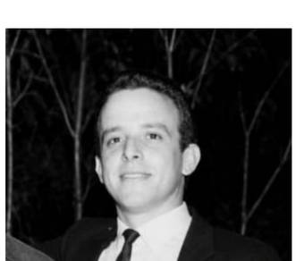

A trajetória do professor Wilmar Torrano se confunde com momentos importantes da evolução da Radiologia. Seus primeiros contatos com a área aconteceram em 1967, quando trabalhava na Ortopedia do Hospital São Luiz e acompanhava exames em pacientes internados. No ano seguinte, por sugestão de um colega, trocou o curso de Auxiliar de Enfermagem pelo de Operador de Raios X.
Naquela época, a Radiologia era muito diferente. Wilmar iniciou com um equipamento Westinghouse de 200 mA, sem colimador, Bucky acionado por uma cordinha e revelação manual das imagens. Os próprios químicos eram preparados e o conhecimento chegava por meio de apostilas mimeografadas.
Ao longo de quase seis décadas, acompanhou transformações que revolucionaram a profissão: das processadoras automáticas aos sistemas CR e DR e à Radiologia digital, chegando às possibilidades da Inteligência Artificial. Para Wilmar, a tecnologia deve ser uma ferramenta de apoio ao profissional, e não uma substituição de sua responsabilidade.

A partir da década de 1990, sua experiência ganhou uma nova dimensão: a educação. Em 1996, recebeu o convite para coordenar a Escola Global, em Campinas, a primeira escola de Radiologia do interior paulista, onde também passou a atuar como professor.